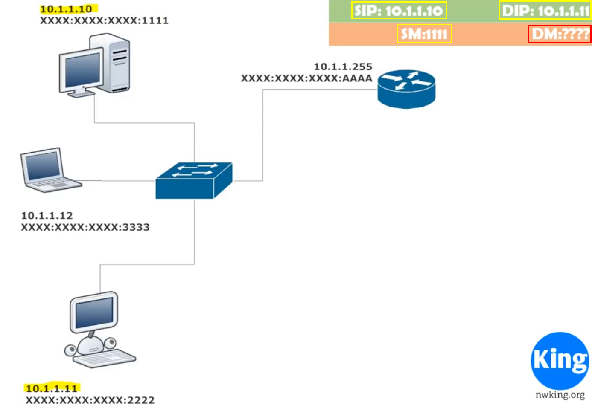

Local Transmission
In local transmission data is transmission is determined by destination mac address
Scenerio: Here machine 10.1.1.10(Machine A) wants to send data to machine 10.1.1.11(Machine B) but don't know the destination mac address

Step1: Now Machine A creates a ARP(Address Resolution Protocol) request to Switch

Step2: Switch broadcast that request to everyone

Step3: Only the desired machine replies to switch and then reaches to our Machine A

Step4: Now Machine A sends the packet to switch but this time switch learnt the Mac address so it directly transmits the data to destination

Out of the network Transmission
Same ARP kind of thing is done